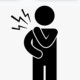

دررفتگی شانه
در رفتگ مفصل شانه در سه نمای AP و Axial و Lateral بررسی میشود.
در رفتگی قدامی:
در رفتگی های شانه اغلب قدامی است، تشخیص با عدم تطابق سر هومروس و گلنوئید است.
در این نوع در رفتگی احتمال آسیب عصب آگزیلاری وجود دارد بی حسی در قسمت لترال بازو به همین علت است.
در رفتگی خلفی:
در رفتگی خلفی شیوع کمتری دارد و در این حالت سرهومروس به شکل لامپ است. معمولا به علت تشنج، یا برق گرفتگی ایجاد میشود
در این نوع در رفتگی اندام در حالت اینترنال روتیشن قرار میگیرد بطوری که کوچکترین تغییری برای اکسترنال روتیشن با درد شدیدی همراه است.